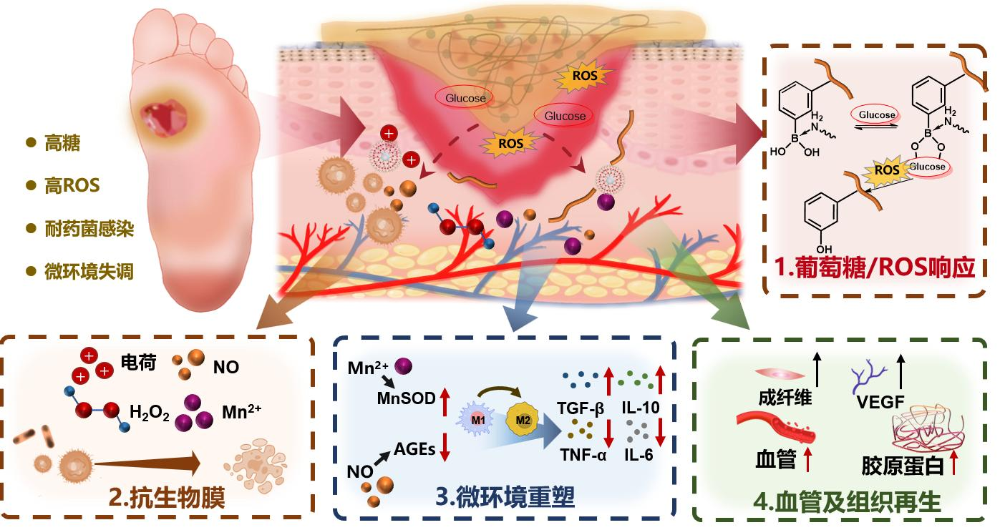
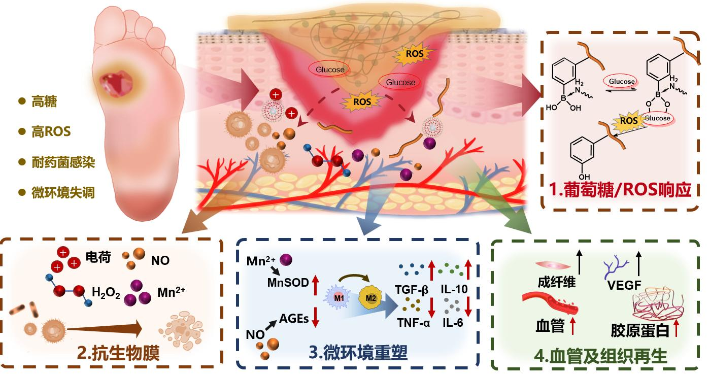

一种导电水凝胶敷料、制备方法及其在电促愈合中的应用
中国发明专利
申请号: 202510461681.X.
华侨大学 · 材料科学与工程 | 生物医用材料
 

参与国家自然科学基金的攥写与绘图
参与国家自然科学基金的攥写与绘图
专业仪器：细胞、动物实验的基本操作、ELISA、免疫荧光染色等；共聚焦显微镜、FTIR、拉曼、UV-vis、TEM、SEM、DLS、热重、流式、凝胶电泳、力学试验机、源表、四探针、电化学工作站、3D打印（FDM/DLP）、超临界CO2萃取设备等
绘图/软件：Origin、GraphPad Prism、Chemdraw、Procreate、Blender、Adobe Photoshop、Adobe Illustrator、sharp 3D、3D max、R studio、MestReNova等
写作/综合：英文论文撰写、基金材料、活动组织、公文写作、科普活动开展、宣传运营